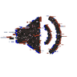

Discos
& Canciones
TODO SALIÓ BIEN EN LA
SENCILLA VILLA QUIÉN
S7TODO SALIÓ BIEN EN LA
SENCILLA VILLA QUIÉN
20268 TEMAS
Todo salió bien en la Sencilla Villa Quién
SUETER 7 · 2026 · 45 MIN
Canciones escritas entre caminatas, cuadernos
y el ruido del tren de las seis.
Ver letras
Comprar vinilo
Spotify · YouTube · Bandcamp
DISPONIBLE
EN TODAS LAS
PLATAFORMAS
Otros lanzamientos
Escritorio
Todo Salió Bien en la Sencilla Villa Quién
0:00
6:38

no se encuentra el audio